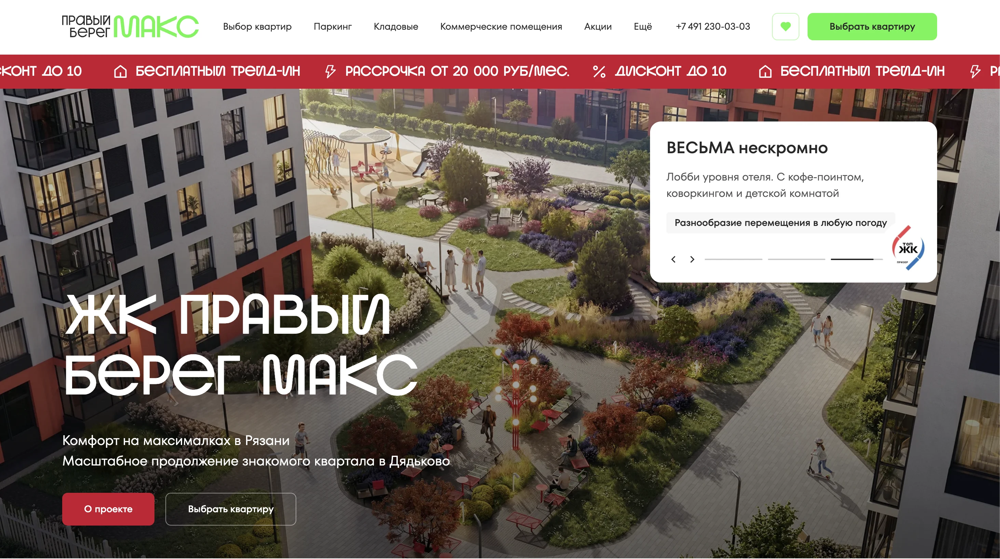
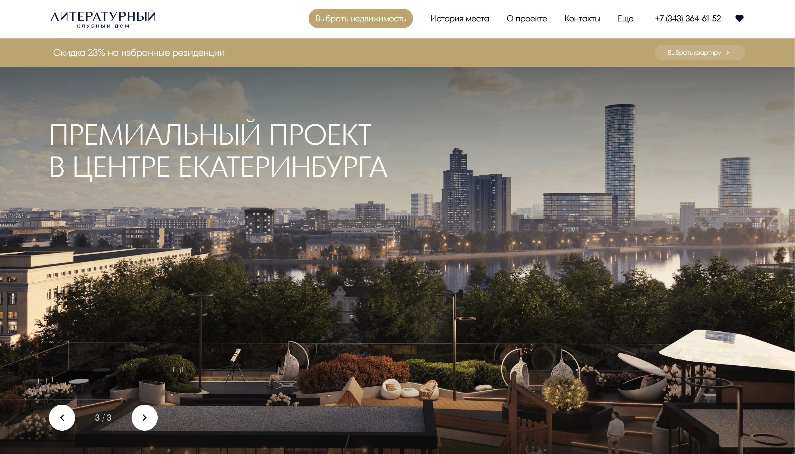
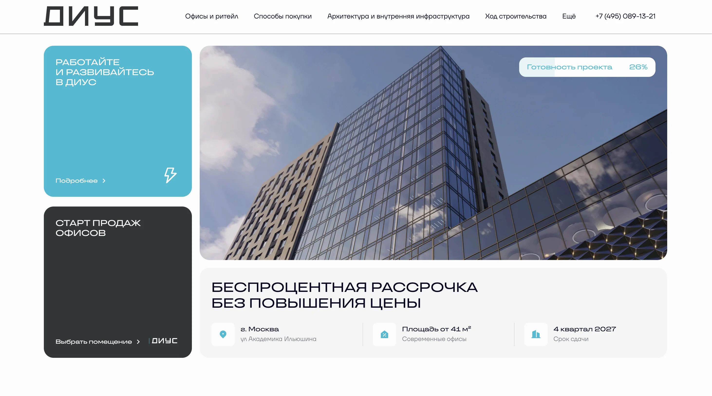
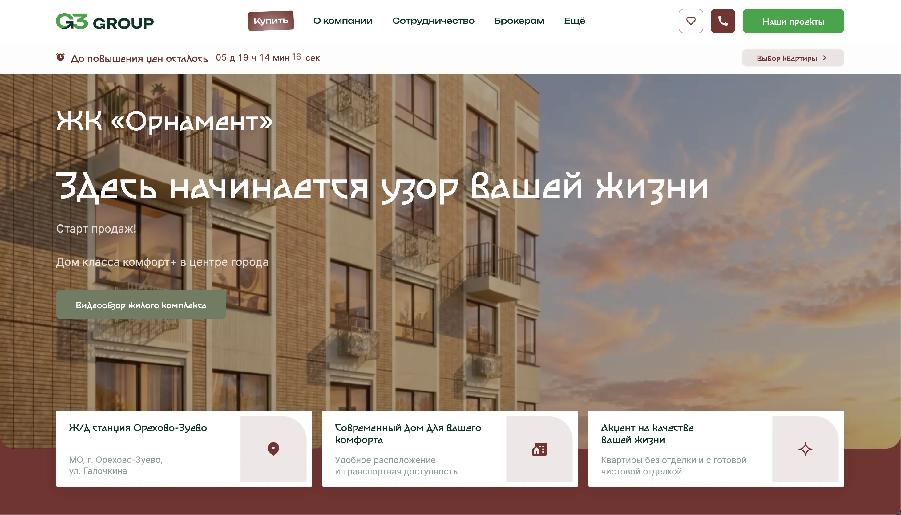
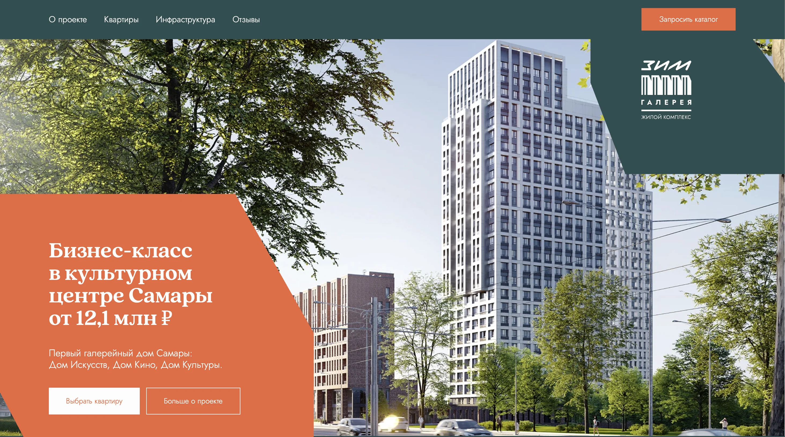

Сайты для застройщиков
С августа 2024 года я делаю сайты для застройщиков на платформе Ида.Лайт — сначала как UX/UI-дизайнер, потом как дизайн-лид, который продолжает вести проекты сам. Здесь — четыре клиента, на которых видно, как я работаю руками: брендинг, структура, сторителлинг и кастомная вёрстка.
Hero-визуал
Коллаж из экранов сайтов клиентов
Контекст
Ида.Лайт
Платформа даёт только набор блоков, на которых собирается сайт. Всё остальное — на дизайнере. От застройщика обычно приходят наработки по брендингу, рендеры и тексты. У многих клиентов дизайн-компетенция невысокая, поэтому брендинг часто приходилось прорабатывать с нуля или пересобирать.
Я делала весь веб-дизайн: структуру, смысловую нагрузку и сторителлинг страницы, UX, графику. Аккаунт-менеджеры вели проекты, контент-менеджеры заполняли информацию и типовые страницы. С людьми, которые принимали решения на стороне клиента, я общалась напрямую на встречах.
Как я делаю сайт
- Собираю структуру. Продумываю в Figma структуру, смысловую нагрузку и сторителлинг сайта — так, чтобы всё уложилось в блоки, которые есть на платформе.
- Рисую графику. Отрисовываю все графические элементы и решаю, как расставить рендеры.
- Дорабатываю блоки кодом. Раньше я работала разработчиком на небольших проектах, поэтому правлю блоки под задачу — от мелких доработок до полностью кастомных сайтов.
- Делаю шаблоны для команды. Типовые страницы верстаю как шаблон: по моей странице ипотеки контент-менеджеры собирали рассрочку, трейд-ин и другие способы покупки.
- Слежу за сайтом после запуска. Каждый месяц собираем аналитику, а в первые три месяца приходим к клиенту с улучшениями, если видим просадку конверсии или что пользователь путается.
Как я понимаю, что получилось
- Клиент доволен результатом
- Показатели сайта через 2–3 месяца после запуска
- Клиент забирает мои решения в свой бренд — переносит стилистику сайта в рекламу и другие носители на постоянной основе, хотя мы для него только подрядчик
60
сайтов запустила как UX/UI-дизайнер
1/60
клиентов ушли за этот период
40
сайтов запустила уже как дизайн-лид
ЖК «Литературный»

МФК «Диус»

«Антоново» · не опубликован
«Орнамент» · переделка


Другие проекты
Итог
Что объединяет все сайты
??
Что сделала бы иначе
??
Чем горжусь больше всего
??